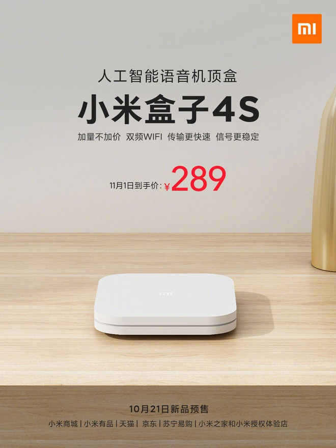

Xiaomi vừa chính thức trình làng thế hệ Android TV Box mới nhất của hãng, có tên gọi là Mi Box 4S. Đây được coi như phiên bản nâng cấp của chiếc Mi Box 4 SE mà công ty từng giới thiệu vào đầu năm 2019, sở hữu nhiều tính năng nổi bật nhưng đi kèm mức giá khá phải chăng.
So với thế hệ trước, Mi Box 4S đã được nâng cấp lên Wi-Fi băng tần kép, hỗ trợ xuất hình ảnh độ nét cao với độ phân giải 4K HDR và có 2GB RAM + 8GB bộ nhớ. Ngoài ra, sản phẩm cũng đi kèm với remote hỗ trợ tìm kiếm bằng giọng nói.
Mi Box 4S được trang bị vi xử lý Amlogic lõi tứ Cortex-A53 (64 bit, xung nhịp 1.5GHz), tích hợp GPU Mali-450, hỗ trợ HDR và giải mã video H. 265 4K, 2K 60fps. Mặt khác, chiếc Android TV Box này còn hỗ trợ Bluetooth LE 4.1, công nghệ DOLBY AUDIO và giải mã âm thanh DTS-HD.
Theo dự kiến, Xiaomi sẽ chính thức bán ra Mi Box 4S vào ngày 21/10. Sản phẩm có giá bán lẻ là 289 NDT (khoảng 1 triệu đồng), cao hơn đôi chút so với mức giá 189 NDT (khoảng 650.000 đồng) của thế hệ tiền nhiệm Mi Box 4 SE.
Xiaomi chính thức ra mắt Mi Box 4 SE giá rẻ, chip lõi tứ Cortex-A7, RAM 1GB, độ phân giải FullHD, giá 650 ngàn đồng